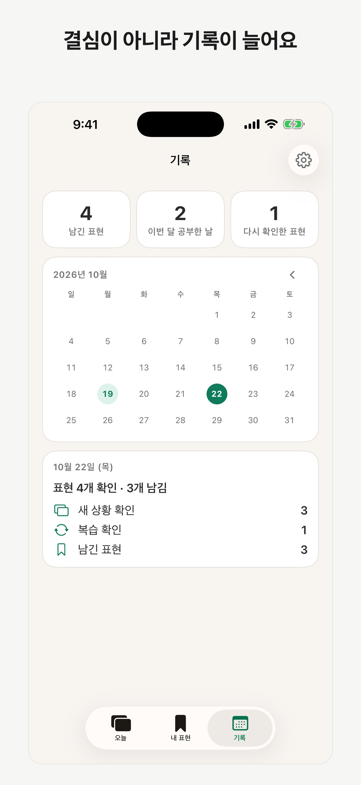
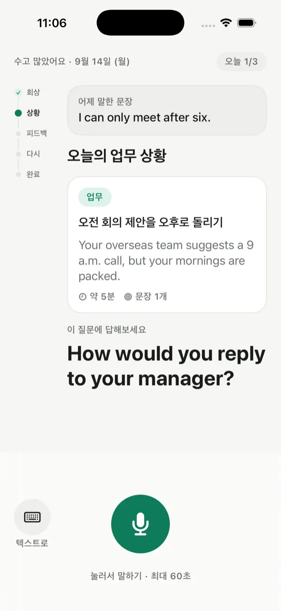
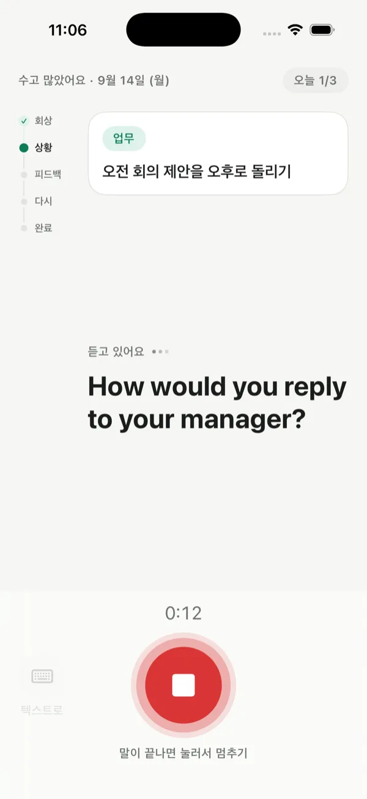
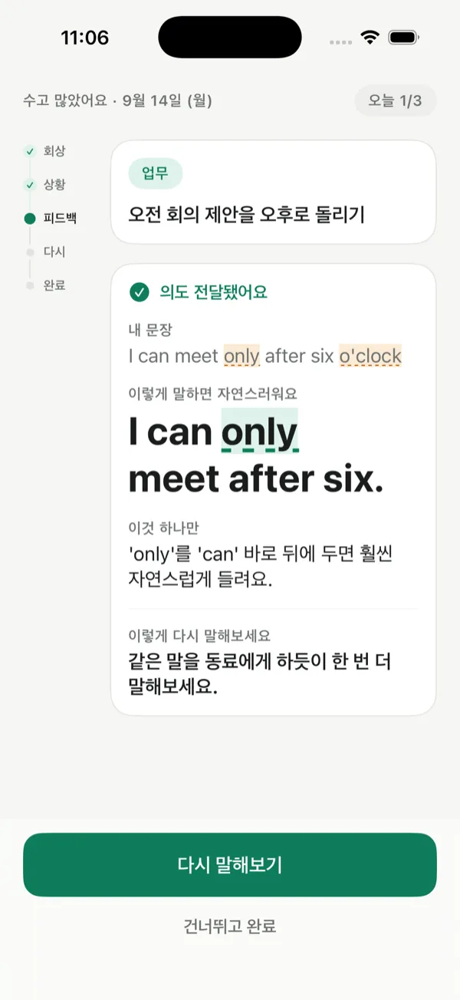
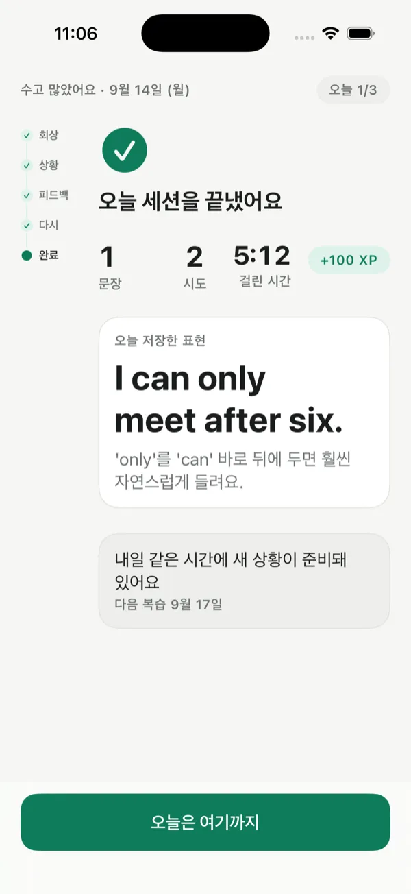

큰 결심 없이, 오늘 한 문장.

App Store에 공개된 1.5 기록 화면이에요. 남긴 표현 수, 이번 달 공부한 날, 다시 확인한 표현 수를 볼 수 있어요.
영어 앱을 몇 번 깔았다 지운 적 있다면, 이번엔 카드 한 장만 봐요. 회의·메신저·업무 요청 상황을 보고 속으로 영어를 떠올린 뒤, 탭해서 표현 하나를 확인해요. 마음에 들면 남겨 두고, 「내 표현」에서 찾아 한 장부터 복습해요. 마이크·키보드·로그인·결제 없이 시작하고, 연속 기록 압박도 밀린 과제도 없어요.
한 장씩 본 것이 「기록」에 조용히 남아요.
남긴 표현
「이 표현 남기기」를 누를 때마다 내 표현이 하나씩 늘어나요. 숫자를 누르면 그 목록이 바로 보여요.
이번 달 공부한 날
며칠 쉬어도 깎이는 건 없고, 다시 본 날만 조용히 늘어나요.
다시 확인한 표현
가린 채 다시 떠올려 본 표현이 쌓여, 예전에 남긴 표현이 얼마나 남아 있는지 알 수 있어요.
회의·메신저·업무 요청 상황 하나와 하고 싶은 말이 보여요. 영어는 아직 가려져 있어요.
소리 없이
「표현 확인」을 누르면 대표 표현과 뜻, 팁 한 줄이 나와요. 다른 말투도 펼쳐 볼 수 있어요.
한 손으로
마음에 들면 남겨서 「내 표현」에 두고, 아니면 넘겨요. 「여기까지」 해도, 「한 장 더」 봐도 돼요.
한 장부터
마이크·키보드·로그인·결제가 필요 없어요. 며칠 쉬어도 밀리지 않아요.
계정·로그인·카드 등록이 필요 없고, 마이크 권한도 묻지 않아요.
상황을 보고 속으로 떠올린 뒤 탭해서 표현 하나를 확인해요. 말하거나 적지 않아도 괜찮아요.
마음에 드는 표현은 남겨 두세요. 「내 표현」에서 검색하거나 회의·메신저·업무 요청으로 골라 다시 볼 수 있어요.
「복습하기」로 남긴 표현을 가린 채 다시 떠올려요. 한 장만 해도 돼요. 본 날과 남긴 표현은 「기록」에 쌓여요.
선택이에요. 카드에서 「더 연습하기」를 누르면 음성이나 텍스트로 답하고 AI 피드백을 받아요. 기본 카드에는 필요 없는 심화 연습이에요.

준비된 상황을 읽어요
오늘의 업무 상황 하나와 그에 대한 영어 질문이 이미 준비돼 있어요. 무엇을 공부할지 고르지 않아도 돼요.

말하거나 적어서 답해요
음성으로 최대 60초까지 답해요. 말을 중간에 끊지 않고, 멈추는 시점은 사용자가 정해요. 지하철이나 사무실에서는 왼쪽의 '텍스트로' 버튼을 눌러 적어도 돼요.

문장 하나와 팁 하나를 봐요
의도가 전달됐는지 먼저 알려주고, 자연스러운 문장 한 개와 왜 바뀌었는지 한 줄, 가장 영향이 큰 팁 한 개만 보여줘요. 달라진 부분만 표시해서 전체를 다시 읽지 않아도 돼요.
같은 뜻을 한 번 더 말해요
받은 문장을 참고해 같은 뜻을 한 번 더 말해봐요. 텍스트로 답했다면 한 번 더 적으면 돼요. 건너뛰고 바로 완료해도 괜찮아요.

저장한 표현을 확인하고 끝내요
오늘 저장한 표현 하나와 다음 복습일을 확인하고 끝나요. 연속 일수나 요일 빈칸 같은 압박 장치는 없어요.
좋은 앱들이 이미 많아요. 출근영어가 다르게 잡은 것은 세 가지예요.
하나
며칠 쉬어도 복습 큐가 쌓이지 않아요. 돌아오면 밀린 것부터가 아니라 보던 카드 한 장부터 다시 봐요.
둘
틀린 곳을 한꺼번에 지적하지 않아요. 의도를 살린 자연스러운 문장 한 개와 가장 영향이 큰 팁 한 개만 드려요.
셋
앱 안에서 구독을 팔지 않아요. 계정도 카드 등록도 없이 모든 기능을 쓸 수 있어요.
무료
이전에 구독하셨다면 iPhone 설정 > Apple 계정 > 구독에서 관리할 수 있어요. 앱 안에서는 새 구독을 판매하지 않아요.
아무것도 쌓이지 않아요. 밀린 과제나 복습 큐가 없고, 돌아오면 보던 카드부터 이어서 봐요. 연속 일수도 세지 않아요.
괜찮아요. 의도가 전달됐는지 먼저 확인하고, 고칠 곳은 한 가지만 알려줘요. 틀린 곳을 한꺼번에 지적하지 않아요.
기본은 소리 없이 보는 카드예요. 상황을 보고 속으로 떠올린 뒤 탭해서 표현을 확인하면 돼요. 말하거나 적어 보는 연습은 원할 때만 「더 연습하기」로 해요.
네. 마이크도 키보드도 필요 없어서 서서 가는 지하철에서도 한 손으로 카드를 넘길 수 있어요. 마음에 드는 표현은 남겨 두고 내 표현에서 다시 찾아요.
한 장만 봐도 괜찮아요. 확인 전에 속으로 먼저 떠올려 보고, 남긴 표현은 내 표현의 「복습하기」로 가린 채 다시 떠올려 봐요. 복습도 한 장부터 할 수 있어요.
카드는 무제한이에요. 원하는 만큼 보고 남기고 복습할 수 있어요. 말하거나 적어서 피드백을 받는 AI 연습은 원할 때만 쓰는 선택 기능이에요. 지금은 모든 기능이 무료예요.
기본 카드는 녹음하지 않아요. 선택 연습에서 말로 답하면 iPhone 안에서 Apple 음성 인식으로 텍스트가 되고, 음성 파일은 기기를 떠나지 않아요. 서버로는 텍스트만 가고, 피드백 문장은 Anthropic의 Claude가 써요.
출근영어 (Workday English) is a silent, one-handed English expression-card app for Korean office workers' commutes: start with a single card, no microphone, keyboard, sign-in or payment needed.
See Support and the Privacy Policy for details. Download 출근영어 on the App Store.